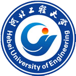

河北工程大学简介
河北工程大学是河北省重点骨干大学，坐落在中国历史文化名城、中国“成语典故之都”---邯郸市。学校拥有1个服务国家特殊需求博士人才培
养项目--水资源水环境调控及综合管理，具有在职人员以同等学力申请硕士学位授予权以及推荐优秀应届本科毕业生免试攻读硕士学位研究生资格。
学校办学条件优良，校园环境优美。现有教职工2235人，副高职以上人员811人。全日制普通本专科生、研究生、留学生共22511人。拥有39个装
备先进的教学、科研用现代化实验室和学术交流中心、体育场馆、学生活动中心。拥有功能完备的现代化图书馆，馆藏纸质图书总量218万册、中外文
期刊2149种。学校附属医院为三级甲等综合医院，附属建筑设计院为甲级资质设计院，附属学校为省编办、省财政厅批准的独立设置和编制经费单列
单位。学校有工学、理学、管理学、农学、医学、文学、经济学、法学、艺术学等9大学科门类。现设有15个学院、1个独立学院、2个教学部和71个本
科专业。
学校高度重视本科生创新实践能力培养，大学生科技、文化、体育活动十分活跃。近年来，学生在全国“挑战杯”竞赛、中国科技创业计划大赛
、亚太大学生机器人大赛、全国大学生“飞思卡尔”杯智能汽车竞赛等竞赛中获国家级奖励316项。尤其是在亚太大学生机器人大赛国内选拔活动中，
我校代表队连续两年进入全国八强，荣获“2012年亚太大学生机器人大赛国内选拔活动一等奖”。学生男子篮球队多次获得中国大学生篮球联赛
（CUBA）东北赛区冠亚军。学校体育代表团曾获第七届全国大学生运动会第四名，在河北省第十五、十六、十七届大学生运动会上，学校体育代表队
更是豪取团体总分“三连冠”。
学校大力加强应用技术研究、开发研究以及基础理论研究。建设有河北省资源勘测研究重点实验室等8个省级重点实验室、省级工程技术研究中心
。近五年，承担省部级以上科研项目538项，学校作为合作单位获国家科技进步二等奖1项，主持完成的项目获省部级科技奖励87项、省部级教学成果
奖励42项，出版学术著作81部，发表学术论文9727篇，其中被三大检索收录574篇。《河北工程大学学报》（自然科学版）是中国科技核心期刊并被美
国《化学文摘》（CA）和俄罗斯《科学文摘》（AJ）收录。《河北工程大学学报》（社会科学版）是全国高校优秀社科期刊。
校徽释义

河北工程大学校徽由“河北”、“工程”的拼音首写字母“H”、“G”为设计元素，以采用
中国写意画的计白守黑、疏可走马、密不通风的构图法和现代抽象图案相结合。图案中空白处让
人丰富的联想，耐人寻味；柔和优美的曲线和圆点结合给人一种视觉美感；包含着艺术和人文的
气息。
字母“H”、“G”经艺术变形构成腾飞的雄鹰和从东方冉冉升起的太阳组成。腾飞雄鹰象征
学子不怕艰险，探索真知，立志成才的崇高理想，体现河北工程大学立德立志，善学善行的办学
理念，为培养具有勤奋朴实、肯干实干、创业奉献的应用型高等工程技术人才，不断开拓进取，
大展宏图。图案中太阳象征河北工程大学教育事业蒸蒸日上，蓬勃发展的美好前景。
校徽的标准色彩为蓝和红，蓝色象征博大深远，智慧结晶；红色象征激情澎湃，生机活力。
图案造型优美、简洁新颖，有很强视觉冲击力和现代感，达到内容与形式完美统一。
校训
“立德立志，善学善行”是河北工程大学秉承高等工程教育传统，坚持现代工程教育理念，立足艰苦行业和地方基层的服务面向，培养善学善行
的复合型应用人才办学实践的高度总结和概括，是学校办学宗旨和人才培养目标的精炼表达。
立德乃成人之本，立志为成长之要，立德树人是学校的根本任务。“立德立志”，意在教育学生做品行高尚、志存高远的有德有为之才；勉励教
师立志教育事业，将立德树人作为园丁的神圣职责。
善学乃成才之基，善行是有为之源，善学和善行反映了理论和实践的统一。“善学善行”意在教育学生善于学习，善于行动，善于实践；勉励教
师善于治学，善于工作，善于用实际行动为人师表。
才者德之资，德者才之帅。善学者尽其理，善行者究其难。“立德立志，善学善行”是德和才的统一，知和行的统一。表明河北工程大学以“育
人为本，德育为先，培养德才兼备、知行统一的国家栋梁”为己任；也表明河北工程大学培养的人应当“有道德、有志气，善学习、善实践”，德智
体美全面发展。
“立德立志，善学善行”，既是结合河北工程大学的实际，对学校办学宗旨、崇高使命、人才培养目标的提炼和总结，也是对中国优秀传统文化
的继承和发扬。其中，“立德”取自《左传·襄公二十四年》“太上有立德，其次有立功，其次有立言，虽久不衰，此之谓不朽。”“立志”取自朱
熹“百学须先立志”和康有为《论语注》“立志为学者第一事，志不立则天下无可为者。”“善学善行”取自《荀子·大略》“善学者尽其理，善行
者究其难”。历史文化和现实理念在河北工程大学“立德立志，善学善行”的校训中得到了有机统一，必将激励一代又一代河北工程大学人，在校训
的指引和感召下创造出辉煌的业绩和灿烂的人生。
校歌：学子心中不落的太阳
作词：李万庆
作曲：谢彬
依偎着滏水和太行，满园中桃李芬芳。
立德、立志、善学、善行，爱国、敬业、坚毅、自强。
啊，河北工程大学，学子成才圆梦的地方。
走进这神圣的殿堂，我的心澎湃激荡。
拥抱科学，引领文化，明礼、诚信、勤奋、向上。
啊，河北工程大学，学子心中不落的太阳。